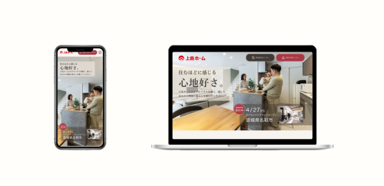

制作概要
- 担当内容
- LPデザイン・バナーデザイン制作
- 制作期間
- 1週間
- 使用ツール
- XD・Illustrator・Photoshop
目的
架空の住宅メーカーによるモデルハウスの新規グランドオープンを想定し、告知用バナーとLPを制作しました。
広告からLPへ誘導し、モデルハウスへの来場につなげることを目的として、バナーとLPのデザインに統一感を持たせながら制作しました。
ターゲット
- 20〜40代の女性
- 宮城県に住んでいる方
- ファミリー層
- 住宅の購入を検討している方
工夫した点
色・トーン
住宅購入を検討する方に安心感を持ってもらえるよう、ベージュやクリーム系の柔らかな白をベースに使用しました。ロゴに使用されている赤はそのまま使用すると強い印象になるため、明度・彩度を調整した落ち着いた赤をアクセントカラーとして使用しました。また、文字色にも真っ黒ではなく少し茶色がかった色を使用し、全体的に柔らかく温かみのあるトーンにまとめました。
PC・スマートフォンそれぞれに合わせた情報設計
PCとスマートフォンでは画面サイズだけでなく、閲覧する状況も異なると考え、同じデザインをそのまま縮小するのではなく、それぞれに合わせて情報の配置や写真の大きさを調整しました。PC版では全体のバランスを意識し、じっくり内容を確認できる構成にしました。一方、スマートフォン版ではスクロール中でも内容を把握しやすいよう、写真を大きく配置し、情報を整理しました。
バナーとLPの統一感
バナーだけで完結させず、クリック後のLPまで自然につながるよう、色・写真・デザインのトーンを統一しました。バナーではターゲットである女性が興味を持ちやすい、洗練されたデザインを意識しながら、LPを開いた際にも違和感がないようにしました。また、キャッチコピーに地名を入れることで、該当地域に住んでいる方の目に留まりやすくなるよう工夫しました。写真を大きく見せ、その他の情報を下部に整理することで、モデルハウスの魅力を最初に伝えつつ、必要な情報も確認しやすい構成にしています。
苦労した点
写真を主役にしながら情報を整理すると、シンプルになりすぎてデザインとして物足りなくなってしまうことがありました。そこで、情報量や装飾を増やすのではなく、余白や文字の配置、色の使い方などを調整し、見やすさとデザイン性を両立させることに苦労しました。
また、PC版を制作した後にスマートフォン版へ展開する際、単純にサイズを縮小するだけでは情報が見づらくなるため、フォントサイズや写真の比率、各要素の配置を一つずつ調整しながら試行錯誤しました。
バナーについては、載せたい情報が多く、最初は要素が詰まってしまいました。参考デザインを複数比較したり、第三者から意見をもらったりしながら情報の優先順位を整理し、一目で内容が伝わり、LPを見てみたいと思ってもらえる構成を考えました。
課題・改善
全体をシンプルにまとめることを意識するあまり、デザインとしての特徴や印象が弱くなってしまうことが課題だと感じました。
今後はさまざまなデザインを研究し、レイアウトや配色、写真の見せ方などの引き出しを増やすことで、情報を整理するだけでなく、目的やターゲットに合わせて「魅せる」デザインを提案できるようにしたいです。
また、制作の細かな部分についても「なんとなく」で決めるのではなく、「なぜこの色・配置・サイズにしたのか」を自分の言葉で説明できるよう、制作中から意図を持って考えることを意識したいです。